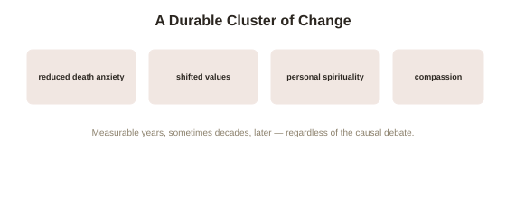

Chapter 3: Survivor Aftereffects — Measurable, Durable Change
Chapter 1 noted, near its end, that survivors' life changes after an NDE are a legitimate, separate research subject — measurable regardless of which side of the causal debate turns out to be right. This deserves its own full chapter, because the aftereffects research is some of the more methodologically solid material in this entire topic, and it stands on its own regardless of whether the underlying experience is ever fully explained.
The Greyson scale: making a subjective experience comparable across studies
Psychiatrist Bruce Greyson developed the Greyson NDE Scale in 1983, a standardized, structured questionnaire scoring the presence and intensity of the various commonly reported NDE elements — the tunnel, the light, the life review, the sense of peace, and others from Chapter 1's frequency chart — giving researchers a consistent, comparable way to identify and quantify genuine, more intense near-death experiences across different studies, patient populations, and countries, rather than relying on inconsistent, informal self-description. This methodological standardization is precisely what made the aftereffects research that follows possible to conduct rigorously in the first place — without a consistent way to identify who actually had a qualifying NDE and how intense it was, comparing outcomes between an NDE group and a comparison group would be far less meaningful.
What the aftereffects research actually finds
Using Greyson-scale-identified NDE groups, longitudinal studies — including van Lommel's own extended follow-up work, tracking survivors for years after their cardiac arrest — have found a consistent, replicated cluster of changes reported at significantly higher rates among people who had a high-scoring NDE than among comparable survivors who didn't. These include reduced fear of death (frequently the single most robust and most frequently replicated finding across this literature), a reported shift toward valuing relationships and present-moment experience over material or status-oriented goals, increased reported spirituality (notably, not necessarily increased conventional religious affiliation or practice — the shift is often described as more personal and less tied to institutional religion), and greater self-reported compassion and reduced interpersonal competitiveness. Several studies have found these changes remain stable and measurable years, in some cases decades, after the original event — a genuinely unusual degree of durability for a psychological change linked to a single, time-limited experience.

Why this evidence doesn't depend on resolving Chapter 1's open question
This is worth stating precisely, because it's easy to assume aftereffects research is just another data point in the causal debate — it isn't, and that's exactly what makes it valuable on its own terms. Whether the underlying experience reflects consciousness surviving independent of brain function, or reflects Chapter 2's gamma surge and other physiological processes generating a powerful, integrated hallucinatory experience, the measured psychological aftereffects are real either way — a powerful, meaning-laden subjective experience can durably reshape someone's values and outlook regardless of its ultimate metaphysical status, in much the same way other profound life experiences (a serious illness, a significant loss, a powerful realization) can produce lasting change without requiring any particular metaphysical explanation to be true. This gives the aftereffects research a genuinely stable, non-contingent evidentiary status the rest of this topic's more contested claims don't share.
Clinical relevance beyond the metaphysical debate
This research has real practical downstream use, independent of the unresolved causal question: hospitals and palliative care settings increasingly train staff to recognize that a patient reporting an NDE after a medical crisis may be undergoing a significant, potentially disorienting psychological transition worth supporting directly, rather than a symptom to be dismissed or a delusion to be corrected — a recommendation that follows straightforwardly from the aftereffects data regardless of which explanation for the underlying experience a given clinician personally finds most plausible. This is a genuinely useful example of how research can inform real clinical practice even while a deeper theoretical question stays open.
Try this
Ideas for noticing or testing this in your own life.
- Notice the durability finding specifically: think of other profound experiences in your own life that produced lasting value shifts, and compare their staying power to what this research finds for NDEs specifically.
- If discussing this topic with someone who's had an NDE, notice you can take the aftereffects seriously and supportively without needing to resolve, or even raise, the underlying causal debate at all.
Worth pulling on?
A few loose threads from this chapter — if any of these genuinely grab you, that's a good sign of where to go next.
- The Greyson scale's standardization also made it possible to compare NDE content itself across different cultural and religious backgrounds — revealing real, informative variation. → The subject of the next chapter: cross-cultural variation in NDE content.
- Reduced fear of death and shifted values after a profound experience connect to a broader body of research on post-traumatic growth, though NDEs aren't typically classified as traumatic in the clinical sense. → Already in the library: Trauma and the Body's final chapter covers post-traumatic growth and its own important caveats.